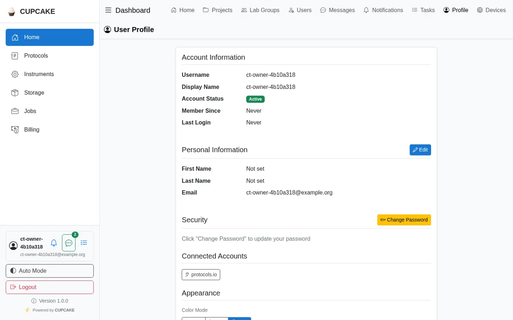
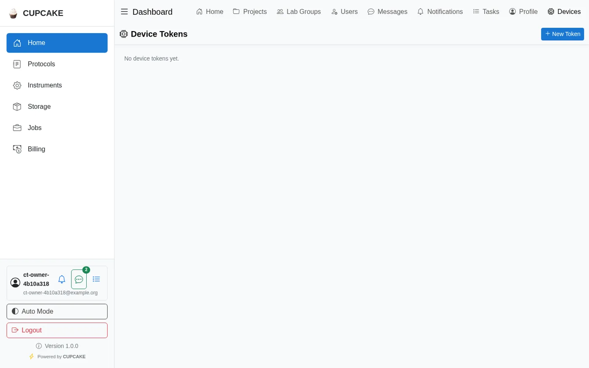

Profile
User Profile shows your account and changes your name and email address, with your current password, and your password. Connected Accounts connects protocols.io; see protocols.io.

Appearance chooses light, dark or automatic colours, and the theme: Default or E-Ink, for e-ink displays.
Device tokens
A device token lets a device, such as a lab display, use Cupcake as you without your password.

New Token creates one with a label, read-only or read and write access, and an optional expiry date. Copy the token when it is shown: it is not shown again. A token can be rotated or deleted.